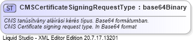

| Definition Type: | SimpleType |
| Name: | CMSCertificateSigningRequestType |
| Namespace: | http://schemas.nav.gov.hu/ERECEIPT/1.1/communicationData |
| Containing Schema: | communicationData.xsd |
| Documentation: | CMS tanúsítvány aláírási kérés típus. Base64 formátumban. CMS Certificate signing request type. In Base64 format |
|  |
|